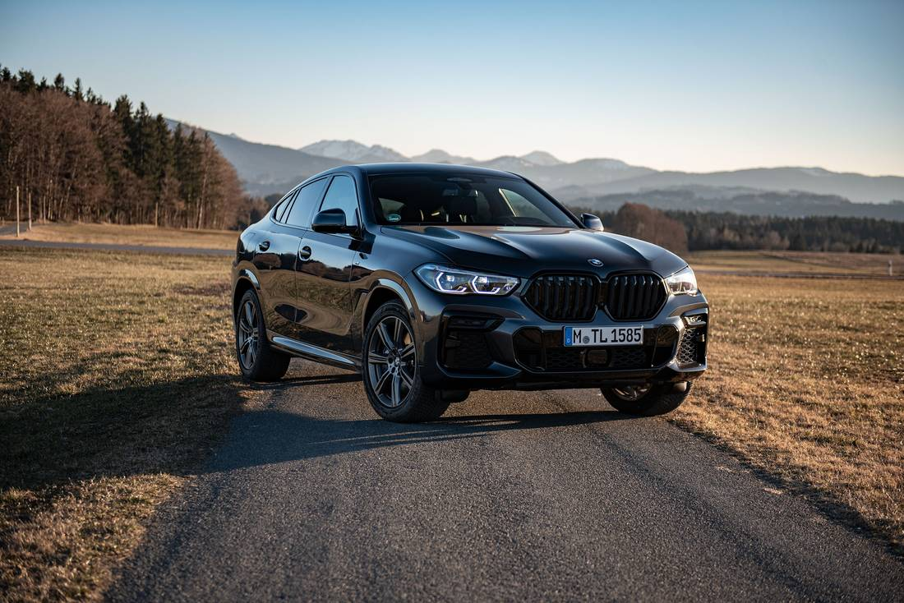
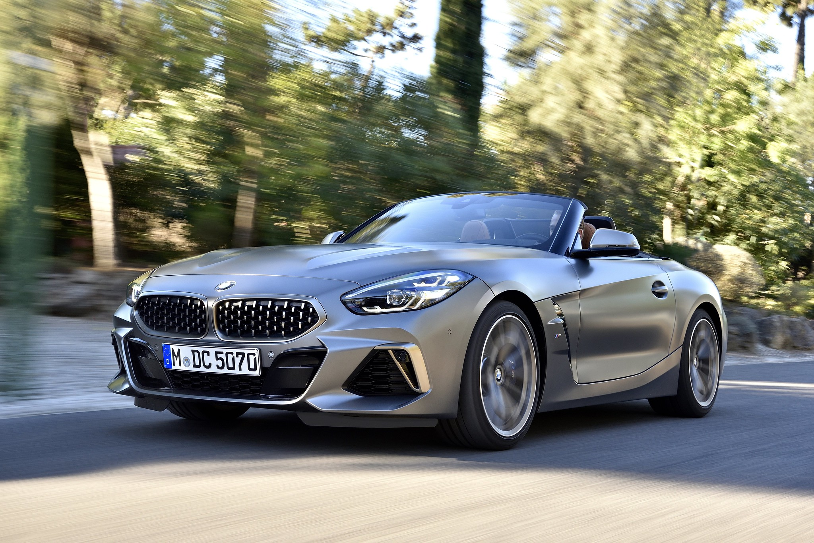

BMW X6
Der BMW X6 ist eine SUV-Baureihe der oberen Mittelklasse des Herstellers BMW und bildet die Coupe-Variante des BMW X5. Die erste Generation wurde ab 2008 angeboten.
BMW 1er-Reihe
Der BMW 1er ist ein Fahrzeugmodell der Kompaktklasse (untere Mittelklasse) des Automobilherstellers BMW. Die erste Generation kam 2004 auf den Markt. Ein Alleinstellungsmerkmal der Baureihe war in den ersten beiden Generationen das Antriebslayout mit längs eingebautem Motor vorne und Heckantrieb. Durch die Verwendung der technischen Basis des BMW 3er sollten Kosten gespart und ein möglichst sportliches Fahrgefühl erzeugt werden. Weiterhin war es dadurch möglich die für BMW typischen Reihensechszylindermotoren in ein Kompaktklassefahrzeug zu bauen. Diese Kombination gab es bei keinem anderen Hersteller. Beim Wechsel von der zweiten auf die dritte Generation im Jahr 2019 wurde der Dreier erstmals auf Frontantrieb und quer eingebaute Motoren umgestellt. Von da an wurde die Plattform des MINI für den 1er verwendet.
BMW Z4
Das Z hat bei BMW Sportwagen-Tradition: Ende der 80er Jahre ging es mit dem Z1 los, 1995 kam der Z3, der schließlich 2002 vom Z4 beerbt wurde. Seitdem bleiben die Münchner der 4 im Namen treu, inzwischen gibt es drei Z4-Generationen. War die erste noch als Roadster und Coupé erhältlich, beschränkt sich BMW seit Nummer 2 auf die Offen-Version. Das bei der zweiten Generation eingesetzte Stahl-Klapp-Dach ist inzwischen wieder Geschichte, der dritte Z4 tritt wieder mit Stoffmütze auf. Neu ist dafür die Zusammenarbeit mit Toyota, die ein „Z4 Coupé“ als Supra verkaufen.